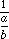

This section details one of the most powerful and unique features of Modula-2--how to create new library modules from which to import entities such as data types or procedures as desired in a particular program.
Library modules are different from program modules and there are special rules for writing and compiling them. That is, one cannot simply compile an ordinary program module, place it on a disk, and import from it. There are two main reasons for making this distinction between program and library modules.
1. There has to be some way for potential client modules to determine what entities are available for import. (Some procedures may be for the internal use of the library module only and not be appropriate for outsiders to know anything about.)
2. Client programs (and programmers for that matter) do not need to know what is the code by which some library procedure was implemented in order to use it. All that is required for use is the syntax. Moreover, the compiler also needs to have available only the syntax; the code can be collected and bound together with the program code by the linker at a later time.
Modula-2 addresses these considerations by partitioning the source material into two separate modules, one containing only the definitions (syntax) of the library entities, and the other containing the implementation (actual code) of those definitions.
These are called the DEFINITION and IMPLEMENTATION parts of a library module respectively (two new reserved words) and are indicated by having the appropriate keyword precede the word MODULE in the heading. Here is a simple example to illustrate how to set this all up.
Write a library module to supplement RealMath.
One would first have to decide what to include in such a module. For the sake of simplicity, this example will have only base ten logarithms, and a simple constant--the square root of two.
First write out a text file such as the following:
DEFINITION MODULE MyRealMath; CONST root2 = 1.414213562; PROCEDURE log (x : REAL) : REAL; END MyRealMath.
This text file is saved and is then compiled. Since this is not a program module (it does not do anything) no code is produced. Instead, compilation yields a symbol file that can be checked whenever any other code is compiled that makes use of the definition. In fact, the definition part of a module is not allowed to contain a body--all code goes elsewhere. A definition module may have imports, such as data types, but these should only be what it uses itself, perhaps by mentioning them in parameter lists.
The actual code for the procedures is embodied in a separate part of the library module, and stored in a different file. It is a good strategy to retain the definitions in the program editor, make such changes as needed, and then save the results as the following:
IMPLEMENTATION MODULE MyRealMath; (* note same name *) FROM RealMath IMPORT ln; PROCEDURE log (x : REAL) : REAL; (* returns the base 10 logarithm of x *) BEGIN RETURN (ln (x)) / (ln (10.0) ) END log; END MyRealMath.
Once this source file has been created and saved, it too is compiled, and the corresponding code file is generated. This step must be done after the definition module has been compiled to a symbol file, for the symbol file contains information that the compiler requires when building the code for the implementation part of the module.
At this point a client program can be written that uses this library module in exactly the same way as it would a vendor supplied library. That is, one can now write:
MODULE Client; FROM MyRealMath IMPORT root2, log;
and then write code making use of the imported items in the normal way.
In order to manage all the files that are needed to store the text and compiled versions of this code, most operating systems employ standard extensions to the basic name. These are typically some variation of the following:
File Contents Typical File Names text source of a program module Myfile Myfile.MOD compiled code of the program Myfile Myfile.MOD.o or Myfile.OBJ text source of definition module Mylib Mylib.DEF symbol file compiled from Mylib Mylib.SBM or Myfile.SYM text source of implementation module Mylib Mylib.MOD compiled code of Mylib Mylib.MOD.o or Mylib.OBJ linked executable final program Myfile or Myfile.EXE
NOTES: 1. The syntax of implementation modules is identical to that of program modules, except that they may not contain export lists (these will be covered in section 10.5).
2. The parameter lists of their procedures should exactly repeat the ones declared in the corresponding definition module. (Although the parameters names may differ between definition and implementation, the types must exactly match).
3. Anything declared in the definition module is available to the implementation module, (thus, root2 can be used in the implementation of MyRealMath without further mention) but anything just imported into the definition module is not; it must be imported again into the implementation module if it is to be used there.
4. Like program modules, the implementation part of a library module may have a body. This body (when it exists) is executed at the point in the client program where the imports from the library are done. This is sometimes used for initializing variables needed for the correct operation of the module, but will not be employed in any examples until later in the text.
When a client program that does imports is compiled, only the syntax of the imported entities needs to be looked up. This can be done with the symbol file, so only the definition part of the library module needs to be compiled at this point. It is not until the system linker is invoked to tie all the code segments together into a single executable application that the output from compiling the implementation part is required. This allows the design of the program and its library support to be conducted in one phase of the job, and all the code implementation to be postponed until later.
The separation of the definition from the implementation is called module decoupling.
In all, Modula-2 has three kinds of modules that can be compiled. Each is termed a compilation unit and their general relationship and syntax is summarized in the diagram below. Note that the diagram does not say that an implementation module contain something that acts like a program module, but something that looks (syntactically) the same as a program module.
A common (indeed the most common) use of library modules is to encapsulate the representation of some abstract data type along with the procedures necessary to manipulate items of this type. What follows is a simple example of this technique. Another will be found in section 6.9, and several more throughout later chapters.
Consider the abstract data type fraction. Mathematically, items of this type are represented as where a and b are integers and b <> 0.
The fraction bar is just a convenient symbol, and the representation could just as easily be done with an ordered pair (a, b) where the first component is the numerator and the second is the denominator. With this notation, and if (a, b) and (c, d) are fractions, some basic operations can be defined as follows:
Negation:
The opposite of a fraction can be found by negating the numerator alone. That is, -(a, b) is just (-a, b). It is a common error on the part of elementary school students to negate both the numerator and the denominator. That answer, of course, is actually equal to the original fraction.
Inverse:
1/(a, b), that is , can be inverted just by writing (b, a), that is, at least, provided that a <> 0 also.
Multiplication:
(a, b) × (c, d) is calculated by multiplying the numerators and denominators together, respectively. This yields (ac, bd).
Addition:
To compute (a, b) + (c, d), a common denominator bd is employed. The numerator can then be expressed as ad + bc. The result: (ad + bc, bd). The reader should verify this by writing it in the more conventional notation.
At this point, subtraction and division can be written in terms of adding a negation and multiplying by an inverse, respectively. Another operation on fractions is reducing them to lowest terms. There is a choice here; this could be provided to the client of the library module, or it could be retained inside the implementation module and all answers automatically reduced to lowest terms. In the initial implementation that follows, it will be left out altogether, and the decision deferred to the reader in the exercises.
What will not be left out, however, even though one might argue that it is not necessary, is a procedure to assign two integers to an item of the type fraction. Since the representation will simply be
TYPE
Fraction = ARRAY [1 .. 2] OF INTEGER;
and assuming that frac is of type Fraction, one could do assignment transparently by having a client program contain the lines
frac [1] := a; frac [2] := b;
without a separate procedure. However, it is best not to use the implementation details of the type in client programs, but to treat the data type abstractly at all times. Indeed, a means will be shown later in the text to deliberately hide the fact that a Fraction is implemented as an array at all. This will actually prevent client programs from knowing any details about the representation, and force them to access items of the abstract type solely through the provided procedures. With the means available so far, this abstract view cannot be enforced, but it ought to be disciplined. This is done to reduce the possibility of errors being introduced by client programs that manipulate parts of data items incorrectly or inappropriately.
NOTE: It is incumbent on the writer of a library module encapsulating an abstract data type to provide all necessary services for that data type so as to eliminate any necessity for client programs to attempt to use items of the type in a transparent manner.
In order to be consistent with this design philosophy, procedures will also have to be included to return the numerator or denominator of a fraction without having a client program look at its components directly. These discussions lead to the following:
DEFINITION MODULE Fractions; TYPE Fraction = ARRAY [1 .. 2] OF INTEGER; (* the first component is the numerator; the second the denominator *) PROCEDURE Assign (num, denom : INTEGER) : Fraction; (* Pre: denom is not equal to zero Post: the fraction returned has num as numerator and denom as denominator *) PROCEDURE Numerator (x : Fraction) : INTEGER; (* Pre: none Post: the numerator of the fraction is returned *) PROCEDURE Denominator (x : Fraction) : INTEGER; (* Pre: none Post: the denominator of the fraction is returned *) PROCEDURE Neg (x : Fraction) : Fraction; (* Pre: none Post: the fraction returned has the numerator negated *) PROCEDURE Inv (x : Fraction) : Fraction; (* Pre: the numerator of x is not equal to zero Post: the fraction returned has numerator and denominator swapped*) PROCEDURE Add (x, y : Fraction) : Fraction; (* Pre: the fractions are initialized Post: the fraction returned is the sum x plus y *) PROCEDURE Sub (x, y : Fraction) : Fraction; (* Pre: the fractions are initialized Post: the fraction returned is the difference x minus y *) PROCEDURE Mul (x, y : Fraction) : Fraction; (* Pre: the fractions are initialized Post: the fraction returned is the product of x and y *) PROCEDURE Div (x, y : Fraction) : Fraction; (* Pre: the fractions are initialized and the numerator of y is not equal to 0 Post: the fraction returned is the quotient of x by y *) END Fractions.
What follows is only an initial implementation of this module. It can be finished and tested by the reader at her leisure once decisions have been made on such matters as how to handle reducing fractions.
IMPLEMENTATION MODULE Fractions; PROCEDURE Assign (num, denom : INTEGER) : Fraction; VAR temp : Fraction; BEGIN temp [1] := num; temp [2] := denom; RETURN temp; END Assign; PROCEDURE Numerator (x : Fraction) : INTEGER; BEGIN RETURN x [1]; END Numerator; PROCEDURE Denominator (x : Fraction) : INTEGER; BEGIN RETURN x [2]; END Denominator; PROCEDURE Neg (x : Fraction) : Fraction; BEGIN x [1] := -x [1]; RETURN x; END Neg; PROCEDURE Inv (x : Fraction) : Fraction; VAR temp : INTEGER; BEGIN; temp := x [1]; x [1] := x [2]; x [2] := temp; RETURN x; END Inv; PROCEDURE Add (x, y : Fraction) : Fraction; VAR temp : Fraction; BEGIN temp [1] := x [1] * y [2] + x [2] * y [1]; temp [2] := x [2] * y [2]; RETURN temp; END Add; PROCEDURE Sub (x, y : Fraction) : Fraction; BEGIN RETURN Add (x, Neg (y) ); END Sub; PROCEDURE Mul (x, y : Fraction) : Fraction; BEGIN RETURN Assign (x [1] * y [1], x [2] * y [2]); END Mul; PROCEDURE Div (x, y : Fraction) : Fraction; BEGIN RETURN Mul (x, Inv (y) ); END Div; END Fractions.
As above, once this second part of the library module has been compiled, client program modules can be written that import one or more of these items from the new library and then employ them in writing code.
Some readers might be wondering at this point why one would bother implementing this data type at all when the type REAL is available to handle fractional quantities. There are two reasons:
1. The type REAL is intended to represent the set of real numbers. The type Fraction represents just the rational numbers. As these are mathematically distinct, it makes sense to represent them differently in a computing notation as well. Of course, items of the type REAL actually can only take on a finite number of values, as storage space for significant figures and exponents is limited, but this is an implementation problem and ought not to be allowed to obscure the abstraction of reals by REAL.
2. Not only is it the case that some reals cannot be represented in a given implementation of REAL, some rational numbers cannot be represented exactly either. A fraction such as 1/2 may have an exact representation in a particular implementation of REAL, whereas the fraction 121/349 may not. Both have exact representations in the abstract type Fraction, as does any rational whose numerator and denominator do not overflow the INTEGER type in the implementation.
It ought also to be observed that this example follows a different design methodology than any previously employed in the text, though it is one that has been hinted at in general terms ever since chapter one. Here, the designer perceives the need to have a certain type of data, designs a representation and decides on the procedures that will act upon it. After the design is complete and the resulting definition module compiled, the data type is implemented in a separately compiled implementation module. The text has not at this point even suggested what application (client) program might have given rise to the need to make use of this data type. While one must presume that such an application would in fact surface before the decision to implement the data type, it is important to note that creating the abstract data type Fraction and its operations, is a task that can be handled independently of the original problem, whatever it may have been.
Once having decided on the need for a particular data type, the programmer is free to concentrate on its implementation, temporarily setting aside the original problem that brought about the need in the first place. The procedure is always as in this section:
1. Decide on what the data type will be and how it will be represented.
2. Write down all the procedures (with their parameter lists and types) that will be needed to use that data type effectively.
3. Write out the definition module in the syntax of Modula-2 with all the necessary types, variables, and procedures that will be available for import by client programs. No code is written, only declarations. Compile this module first.
4. Implement the types and procedures in an implementation module that contains the details of all types, the code for all procedures (the headings of which must be as defined in step three), and assign values to any variables in the body of the module. Compile this module last. The corresponding symbol file of the definition module from step three must be on-line (probably in the same disk directory) when this module is compiled, because it will be checked for matching syntax and some important information copied for library control. See section 6.7.
This section closes with a definition of the design process that has been introduced here:
The method of design that begins with the specification of a data type and all its associated procedures, and then implements these--all independent of the application problems that spawned the need for the data type in the first place--is called object-oriented design.
Some programming notations are themselves designed in such a way as to encourage this kind of design, or even to enforce it. These are termed object oriented languages. Modula-2 can be used as a vehicle for object oriented design, but object oriented notations such as Smalltalk take this design methodology much further. Some versions of Modula-2 have object oriented extensions to the language. These will be discussed in a later chapter.